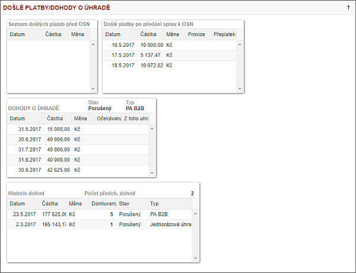

Podzáložka - DOŠLÉ PLATBY/DOHODY O ÚHRADĚ

V levé části záložky je seznam s názvem "Došlé platby po předání spisu k OSN" - tedy seznam všech plateb, které byly doručeny na příslušný účet PO 1. OSN. "Seznam došlých plateb před OSN" obsahuje všechny platby, které byly zaplaceny před 1. OSN příslušného IP.
Splátkový kalendář (dále SK) se v tomto zobrazení udržuje a pro IP se zobrazuje POUZE TEN POSLEDNÍ! Vždy je zobrazen ten poslední ať platný či nikoliv. Jeho stav je popisován informací získanou z centrály - "Stav SK" (jeho hodnoty jsou Porušený/ Zrušený/ Uhrazený/ Aktuální/ Čekající). SK zůstává zobrazen v jakémkoliv stavu, dokud není nahrazen jiným SK.
Do Historie SK jsou zapsány všechny SK vytvořené na spise i před předáním na OSN! Záznam každého SK je v Historii spisu. Datum /Částka /Počet splátek /Stav. Pole jsou needitovatelná, mají pouze informativní zobrazení.